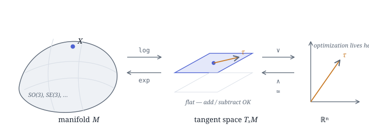

Lie Theory: An Intuitive Introduction for Optimization and Robotics¶
Lie theory is the common language for carrying optimization over "curved spaces" — rotations, poses — back into ordinary vector calculus. This note walks from manifolds and tangent spaces to hat/vee and exp/log, assembles them into one optimization step on a manifold, and closes with a hand-written \(SO(3)\) code sample.
The whole story in one sentence
A Lie group is a "smoothly curved" space whose elements represent transformations (rotations, poses, and so on). The trouble is: you cannot add, subtract, or take gradients directly on a curved space. The fix is to shuttle back and forth between three spaces:
log an element down to the flat tangent space, optimize as usual in the isomorphic \(\mathbb{R}^n\), then exp it back onto the manifold. This one diagram is what the whole note is about.
A study note based on Aalok Patwardhan's A Visual Introduction to Lie Theory[1], with the concrete derivations and code filled in.
Prerequisites¶
The main text keeps returning to the following concepts, each written as an "English term = Chinese name = minimal definition" triple:
- manifold = 流形 = a smoothly curved space that looks locally like flat \(\mathbb{R}^n\) but is globally curved.[2]
- Lie group = 李群 = an object that is both a manifold and a group whose operations (matrix multiplication and inversion) are smooth.[4]
- tangent space = 切空间 = the flat tangent plane attached to the manifold at a given point.[2]
- Lie algebra = 李代数 = the special tangent space of a Lie group at the identity element (written \(\mathfrak{so}(n)\) for rotation groups).[2]
- skew-symmetric matrix = 反对称矩阵 = a matrix satisfying \(A^\top=-A\); elements of a rotation group's Lie algebra take exactly this form.[2]
- exponential map / logarithm map = 指数映射 / 对数映射 = a pair of mutually inverse maps travelling between the tangent space and the manifold; for rotations they are the matrix exponential and matrix logarithm.[4]
1. Recap: optimization in Euclidean space¶
Start with the case where everything goes smoothly. Given a cost function \(f:\mathbb{R}^n\to\mathbb{R}\), we want the \(\mathbf{x}\) that minimizes it. The gradient descent recipe is:
- perturb: nudge \(\mathbf{x}\) by a tiny amount;
- gradient: compute \(\nabla f(\mathbf{x})\), which points in the direction of steepest ascent;
- step: take a small step along \(-\nabla f\).
The crucial premise here is that \(\mathbf{x}\) is a free vector. Each of its components can independently absorb a small increment \(\delta\), and the result is still a valid input. \(\mathbb{R}^n\) is "flat" and addition is unconstrained, so perturbing and stepping are entirely natural.
But what if the object being optimized is not a free vector?
Say it must be a rotation — a \(3\times3\) matrix satisfying particular constraints. Then "just perturb one number" breaks down immediately.
2. The dilemma: optimizing over a rotation¶
Take 2D rotations as an example; the rotation matrix is:
It has 4 entries, but they are not free — two constraints must hold simultaneously:
Suppose we do what we would in \(\mathbb{R}^4\) and add a small increment \(\delta\) to the top-left \(\cos\theta\):
The result: it is no longer a rotation
The norm of the first column becomes \(\sqrt{(\cos\theta+\delta)^2+\sin^2\theta}\neq 1\), so \(R^\top R = I\) is violated and \(\det\) is no longer 1. You cannot "perturb one of the numbers" and keep it a rotation. The matrix entries are tightly bound together by the constraints and cannot move independently.
This is exactly where ordinary optimization hits a wall: the valid rotations do not form a flat vector space but a curved, constrained subset. Doing calculus on it requires a different toolset.
3. Manifolds and Lie groups¶
The set of all valid 2D rotations is called the special orthogonal group \(SO(2)\); the 3D version is \(SO(3)\):
They are manifolds: smoothly curved spaces that locally look like flat \(\mathbb{R}^n\) (much as a patch of the Earth's surface is well approximated by a flat map) but are globally curved. An object that is both a manifold and a group with smooth operations (matrix multiplication and inversion) is a Lie group[4].
Dimension vs. degrees of freedom: why a \(3\times3\) rotation has only 3 degrees of freedom
A matrix in \(SO(3)\) has 9 entries, but \(R^\top R=I\) is a symmetric matrix equation, yielding \(\tfrac{3\cdot 4}{2}=6\) independent constraints. \(9-6=3\) ⟹ \(SO(3)\) is a 3-dimensional manifold, matching exactly the 3 degrees of freedom of "rotate by some angle about some axis". Likewise \(SO(2)\) is 1-dimensional (just the one angle \(\theta\)). This "intrinsic dimension" is precisely the number of parameters we actually want to optimize.

4. Lie algebra and tangent space¶
At a point \(X\) on the manifold, one can attach a flat tangent plane called the tangent space. The special tangent space at the identity element \(I\) is the Lie algebra of the Lie group, written \(\mathfrak{so}(n)\)[2].
For rotations, the elements of the Lie algebra turn out to be exactly the skew-symmetric matrices (反对称矩阵, \(A^\top=-A\)):
Only one free parameter:
Three free parameters \(\boldsymbol{\omega}=(\omega_1,\omega_2,\omega_3)\):
It doubles as the cross-product operator: \(\boldsymbol{\omega}^\wedge\mathbf{v}=\boldsymbol{\omega}\times\mathbf{v}\).
Note that the number of independent components of a skew-symmetric matrix (1 for \(SO(2)\), 3 for \(SO(3)\)) is exactly the intrinsic dimension of the manifold. This is no accident — the dimension of the tangent space is the number of degrees of freedom. That hands us a flat, unconstrained space in which to do the math.
5. hat and vee: \(\mathbb{R}^n\) as a proxy tangent space¶
The tangent space (those skew-symmetric matrices) is flat, but written as matrices it is still awkward to feed straight into an optimizer. Fortunately it is isomorphic to the ordinary vector space \(\mathbb{R}^n\) — two mutually inverse operators ferry elements between them:
- hat \((\cdot)^\wedge:\ \mathbb{R}^n\to\mathfrak{so}(n)\): lifts a workspace vector into the Lie algebra;
- vee \((\cdot)^\vee:\ \mathfrak{so}(n)\to\mathbb{R}^n\): flattens a Lie algebra element back into a workspace vector.
So the object we actually hand to gradient descent is that plain 3-dimensional vector \(\boldsymbol{\omega}\) — it carries no constraints and can be perturbed however we like.
6. exp and log: connecting the curved and the flat¶
The last piece of the puzzle is the bridge that travels between the manifold and the tangent space:
- exponential map \(\exp:\ \mathfrak{m}\to\mathcal{M}\): "wraps" an element of the tangent space back onto the curved manifold;
- logarithm map \(\log:\ \mathcal{M}\to\mathfrak{m}\): conversely, "unrolls" an element of the manifold onto the tangent space.
For rotations, \(\exp/\log\) here are just the matrix exponential and matrix logarithm.
6.1 \(SO(2)\): transparent at a glance¶
Substituting \(\theta^\wedge=\theta G\) into the matrix exponential series and using \(G^2=-I\), the terms assemble themselves into \(\sin/\cos\):
Conversely \(\log R(\theta)=\theta G\), i.e. \(\theta=\operatorname{atan2}(R_{21},R_{11})\). The number \(\theta\) living in the tangent space is the rotation angle itself.
6.2 \(SO(3)\): the Rodrigues formula¶
Let \(\boldsymbol{\omega}=\theta\,\hat{\mathbf{u}}\), where \(\theta=\|\boldsymbol{\omega}\|\) is the rotation angle and \(\hat{\mathbf{u}}\) is the unit rotation axis. Using the \(\mathfrak{so}(3)\) identity \((\boldsymbol{\omega}^\wedge)^3=-\theta^2\,\boldsymbol{\omega}^\wedge\) to collapse the series gives Rodrigues' rotation formula[2][3]:
The inverse (log map):
Numerical stability: two singularities to watch
- \(\theta\to 0\): both \(\tfrac{\sin\theta}{\theta}\) and \(\tfrac{\theta}{2\sin\theta}\) are \(0/0\). Fall back on Taylor expansions: \(\tfrac{\sin\theta}{\theta}\approx 1-\tfrac{\theta^2}{6}\), \(\tfrac{1-\cos\theta}{\theta^2}\approx \tfrac12-\tfrac{\theta^2}{24}\).
- \(\theta\to\pi\): \(\sin\theta\to 0\), the \(R-R^\top\) in the log formula degenerates, and the axis must be recovered specially from the columns of \(R+I\). Production implementations (Sophus, manif) special-case both spots; don't forget them if you roll your own.
7. Putting it together: one optimization step on a manifold¶
Now chain the three spaces into a closed loop. Let the cost function \(f(X)\) be defined on the manifold (\(X\in SO(3)\)). The key trick is to use a right perturbation to parameterize \(X\) by a local, unconstrained small vector \(\boldsymbol{\tau}\in\mathbb{R}^3\):
(The \(\boxplus\) notation follows the convention of micro Lie theory[2].)
Take the gradient of \(f\) with respect to \(\boldsymbol{\tau}\) at \(\boldsymbol{\tau}=\mathbf{0}\) (this step happens entirely inside flat \(\mathbb{R}^3\), with the ordinary chain rule), obtain the gradient \(\mathbf{g}\in\mathbb{R}^3\), and then:
One full iteration
- Define the perturbation in \(\mathbb{R}^n\): \(X(\boldsymbol{\tau})=X\exp(\boldsymbol{\tau}^\wedge)\), with \(\boldsymbol{\tau}\in\mathbb{R}^3\) unconstrained;
- Take the gradient / Jacobian: \(\mathbf{g}=\left.\dfrac{\partial f(X(\boldsymbol{\tau}))}{\partial \boldsymbol{\tau}}\right|_{\boldsymbol{\tau}=\mathbf{0}}\) (flat space, differentiate freely);
- Step in \(\mathbb{R}^n\): \(\boldsymbol{\tau}^\star=-\alpha\,\mathbf{g}\);
- hat + exp back onto the manifold: \(X\leftarrow X\exp\big((\boldsymbol{\tau}^\star)^\wedge\big)\);
- The resulting \(X\) still satisfies exactly \(R^\top R=I,\ \det R=1\) — because we "walked along the manifold" rather than "adding a number in \(\mathbb{R}^9\) and then forcing the result back".
This is the diagram of the whole note, made concrete: log to flatten → optimize in \(\mathbb{R}^n\) → exp to wrap back. The constraints are guaranteed automatically by \(\exp\), and all the optimizer ever sees is one free little vector.
8. Code sample: hand-writing hat / vee / exp / log for \(SO(3)\)¶
import numpy as np
def hat(w): # R^3 -> so(3)
wx, wy, wz = w
return np.array([[0, -wz, wy],
[wz, 0, -wx],
[-wy, wx, 0]])
def vee(W): # so(3) -> R^3
return np.array([W[2, 1], W[0, 2], W[1, 0]])
def exp_so3(w): # Rodrigues: R^3 -> SO(3)
theta = np.linalg.norm(w)
W = hat(w)
if theta < 1e-8: # θ→0: fall back to Taylor
return np.eye(3) + W
a = np.sin(theta) / theta
b = (1 - np.cos(theta)) / theta**2
return np.eye(3) + a * W + b * (W @ W)
def log_so3(R): # SO(3) -> R^3
theta = np.arccos(np.clip((np.trace(R) - 1) / 2, -1.0, 1.0))
if theta < 1e-8:
return vee(R - np.eye(3))
return theta / (2 * np.sin(theta)) * vee(R - R.T)
9. Why all this matters¶
Lie theory is the lingua franca of modern robotic state estimation[2][3]. Almost anywhere rotations or poses have to be optimized or integrated, it is at work:
| Setting | Where Lie theory enters |
|---|---|
| SLAM / bundle adjustment | Camera poses live in \(SE(3)\); Gauss–Newton runs in the tangent space |
| pose graph optimization | Nodes are poses, edges are relative constraints; residuals and Jacobians are computed in the Lie algebra |
| IMU preintegration | A gyroscope measures angular velocity; integration happens on \(SO(3)\) rather than by Euclidean accumulation |
| state estimation / EKF | Uncertainty is modelled as a Gaussian in the tangent space (error-state Kalman filter) |
Remember this one thread: when facing a constrained object (a rotation, a pose, a unit quaternion, …), do not force additions and subtractions on the raw parameters. First \(\log\) down to the flat tangent space, do the optimization / differentiation / modelling in the isomorphic \(\mathbb{R}^n\), then \(\exp\) back onto the manifold. The constraints are kept intact by \(\exp\), and everything returns to familiar vector calculus.
References¶
- Aalok Patwardhan, A Visual Introduction to Lie Theory, aalok.uk interactive tutorial — the original source of this note.
- J. Solà, J. Deray, D. Atchuthan, A micro Lie theory for state estimation in robotics, arXiv:1812.01537 (2018) — the authoritative short treatment from an engineering perspective, with manif as its companion library.
- T. D. Barfoot, State Estimation for Robotics, Cambridge University Press (2017) — a systematic textbook; Chapter 7 covers \(SO(3)/SE(3)\).
- B. C. Hall, Lie Groups, Lie Algebras, and Representations: An Elementary Introduction, 2nd ed., Springer, Graduate Texts in Mathematics 222 (2015).